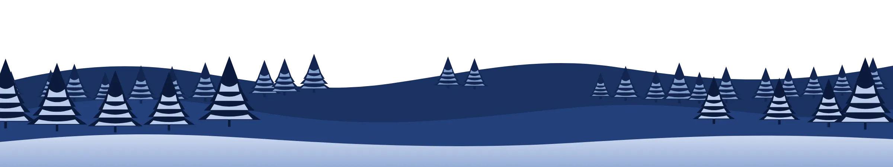
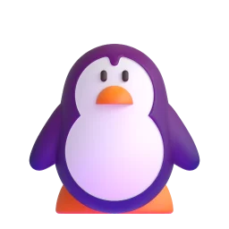
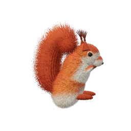
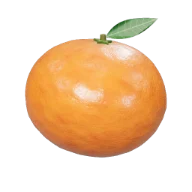
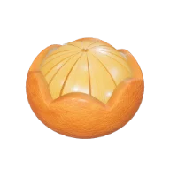
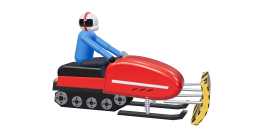
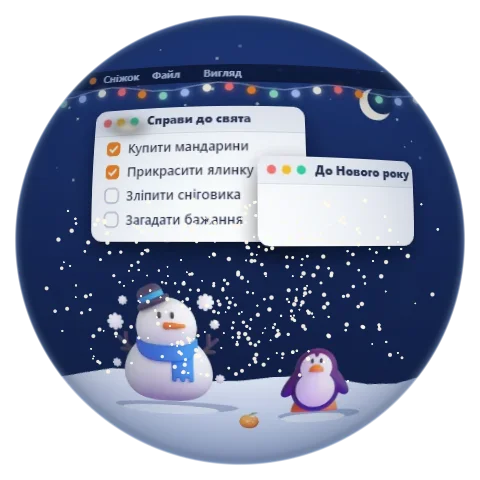

Сніг іде просто на твоєму екрані.
Новорічний застосунок для Windows і macOS. Сніг лягає на вікна, внизу гуляють сніговик, пінгвін і білочка, а коли ти відійдеш — сніговик покличе тебе на ім'я. Сніговик покличе тебе на ім'я.
Безкоштовно. Windows 10/11 і macOS 11 або новіша.
Жива демонстрація: на макеті робочого столу падає сніг, на вікнах лежать сніжні шапки, унизу гуляють персонажі.
Це не відео. Тягни вікна за заголовок, штовхай мандаринки, клацни сніговика.
Як це працює
-
Сніг іде
Легкий сніжок падає поверх усіх вікон. Кліки й клавіатура проходять крізь нього.
-
Лягає на вікна
На верхніх краях вікон росте сніжна шапка, а внизу екрана — кучугури.
-
Посунь вікно — осиплеться
Струсни вікно, і шапка впаде в кучугуру.
Хто живе в кучугурах
Обʼємні персонажі з ходою, тінню та слідами на снігу. Покличи кого завгодно — зʼявиться в сцені вгорі.
-

Сніговик
Кличе тебе на ім'я. Клацни — розсиплеться й збереться.
-

Пінгвін
Ходить перевальцем. Клацни — проїдеться на животі.
-

Білочка
Лякається швидкого курсора, але горішок з рук візьме.
-


Мандаринки
Падають з неба. Штовхни курсором або почисть клацанням.
-
Подарунки
Іноді губить Санта. Клацни — всередині сюрприз.
-

Снігоходи
Раз на 30 або 60 хвилин розчищають кучугури, щоб сніг не закрив пів екрана. Перший — з плугом, з-під нього летить сніговий фонтан.
Потруси сніжну кулю
Усередині — крихітний робочий стіл зі снігом. Потягни кулю мишею чи пальцем, і сніг здійметься та повільно осяде.
З клавіатури: перейди на кулю клавішею Tab і натисни Enter або Пробіл.

І ще кілька дрібниць
- Гірлянда з глянцевих лампочок під рядком меню
- Санта на санях пролітає небом і губить подарунки
- Дні до свята в треї, а опівночі — відлік і салют з твоїм ім'ям
- Спокійний режим: менше руху, один персонаж за раз
- На кожному моніторі свій сніг
- Свої фрази й записані голосові замість стандартних
- Сніжка в курсор: Ctrl+Alt+S або ⌥⌘S
- Пауза на годину для ігор і презентацій
Свято — це разом
Два маленькі інструменти для друзів, родини чи офісу. Працюють просто в браузері: без реєстрації, пошти й сервера.
Завантаж Сніжок
Безкоштовно. Встановлення займає менше хвилини.
- Windows
- 10 або 11, 64-біт, файл Snizhok-Setup.exe
- macOS
- 11 Big Sur і новіші, Intel та Apple Silicon, файл Snizhok.dmg
Збірки не підписані, тож система може перепитати. Як відкрити. Попередні збірки — на сторінці релізів.
Питання
Windows пише «Windows захистив ваш ПК». Що робити?
Це фільтр SmartScreen: він попереджає про будь-які програми без платного цифрового підпису. Сніжок не підписаний, але безпечний і не ходить у мережу.
- У синьому вікні натисни «Докладніше».
- Натисни кнопку «Усе одно запустити».
- Далі звичайне встановлення. Більше питати не буде.
macOS пише «Неможливо перевірити розробника». Як відкрити?
Так Gatekeeper реагує на застосунки без нотаризації Apple.
- Перетягни Сніжок у папку «Програми».
- Клацни значок правою кнопкою (або з Control), вибери «Відкрити» і ще раз «Відкрити» у вікні.
- Якщо кнопки немає: Системні параметри → Приватність і безпека, унизу біля повідомлення про Сніжок натисни «Усе одно відкрити» і підтверди паролем.
Якщо macOS пише, що програма «пошкоджена»: відкрий Термінал, виконай xattr -cr /Applications/Сніжок.app і відкрий Сніжок знову.
Сніговик мовчить. Як додати голос?
Сніжок говорить системним українським голосом. Якщо його немає, сніговик показує лише бульбашку.
- Windows: Параметри → Час і мова → Мовлення → «Додати голоси» → Українська.
- macOS: Системні параметри → Універсальний доступ → Озвучений вміст → Системний голос → Керувати голосами → Українська.
- Або запиши власні голосові: меню Сніжка → «Папка для своїх голосових…».
Як змінити ім'я?
Значок Сніжка в треї (Windows) або в рядку меню (macOS) → «Змінити ім'я…». Там же можна задати лагідне звертання й послухати, як воно звучить.
Чи не гальмуватиме компʼютер?
Ні. Зазвичай Сніжок бере близько 5 % одного ядра й до 300 МБ памʼяті. Для ігор і презентацій є «Пауза на 1 годину», тоді навантаження нульове.
Як видалити?
- Windows: Параметри → Програми → Сніжок → Видалити.
- macOS: закрий Сніжок через рядок меню («Вийти») і перетягни його з «Програм» у Кошик.